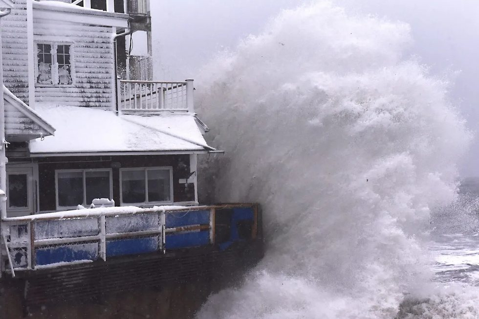
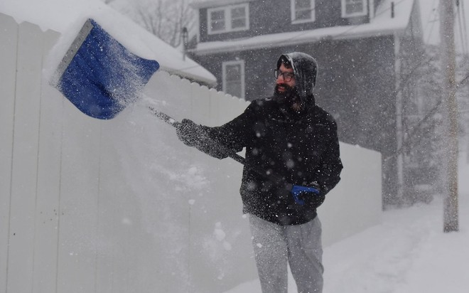
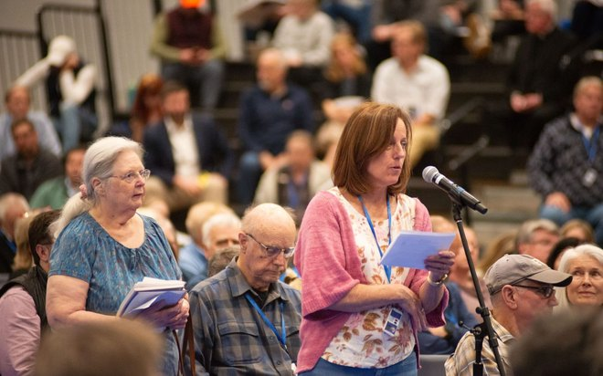
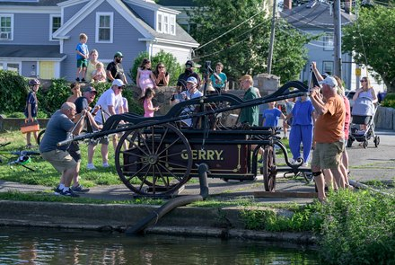
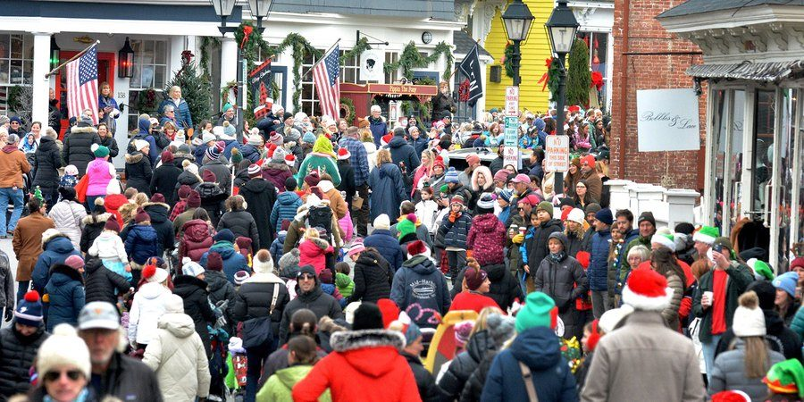
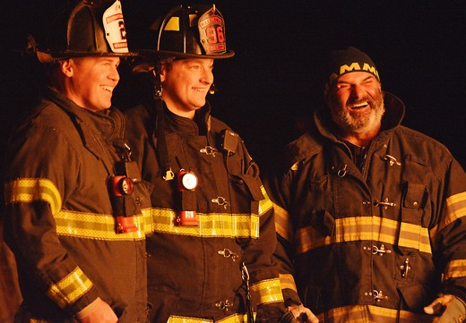
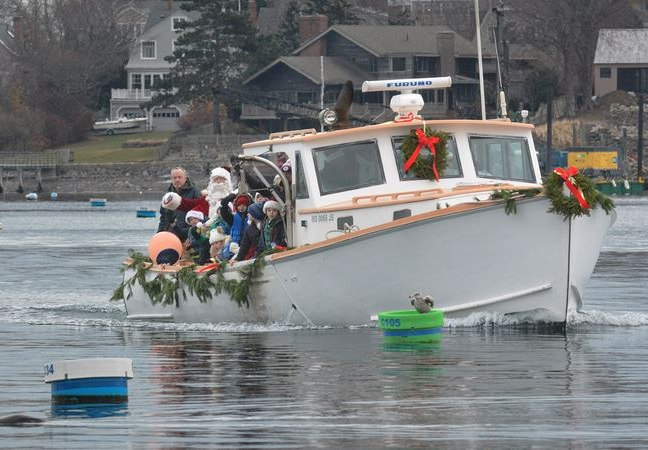
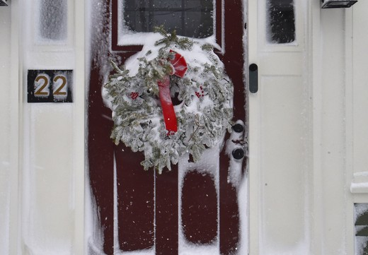
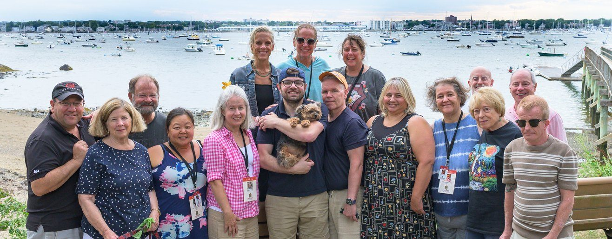
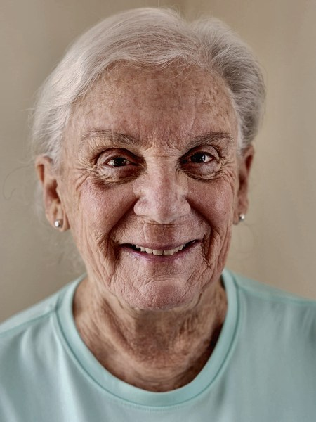

Katie Ring photographed the cover, in which children recreate Archibald Willard’s “The Spirit of ’76,” the painting that hangs in Abbot Hall, during the Fourth of July horribles parade. This report covers the Independent’s first 12 months, from the launch on Sept. 15, 2025, to Sept. 15, 2026. The nameplate is a linocut by Nick Kent. The photographs throughout are the work of Ring, Paula Muller and Steve Rood, contributors this paper pays by assignment.
The Marblehead Independent 74 Atlantic Ave., Suite 306 Marblehead, Massachusetts 01945 marbleheadindependent.com
A voter reads the warrant at Town Meeting on May 4. Independent photo / Katie Ring
A year ago this newsroom was one reporter in a Humphrey Street basement, a linocut of the Old Town House and a promise to cover Marblehead as fully and fairly as one person could. I started the Independent because I love this town and love writing about it. I have covered Marblehead in some capacity since 2012, and after 14 years, I did not want to stop.
I also believed Marblehead deserved the whole story, dry parts included, so that a town that governs itself could decide with the facts in hand. This town takes that seriously. In June, 47.5 percent of voters turned out for the town election, a record in books that go back to 2006. People who show up like that deserve to know what they are voting on.
I have watched local papers across Massachusetts get cut to the bone and learned that a small paper trying to be everywhere ends up being nowhere. So in our first year, we focused on what we could do well: civics, schools, community life, government and culture. We will add more as we grow, and we would rather grow carefully than spread thin. It is why we are at the Christmas Walk and the fireworks as well as Town Meeting. A town is more than its meetings. It is also the summer an 18-year-old Sylvia Plath spent babysitting here, read back aloud to the three people she wrote about as children. It is Niko Kuzmina, who worked a grocery counter for 23 years and left town wearing a police polo with his own name on it.
Here is what we tried. We published 770 stories and sent nearly 50 weekly newsletters. We built 14 free online tools that let anyone sort a town payroll of 1,185 employees and $65.24 million, read 44 years of tax votes or follow Town Meeting article by article. When the override vote came, we did the math before the vote, not after. The full history of Marblehead’s 114 Proposition 2½ questions went online Jan. 28.
Others noticed. The Wall Street Journal credited our interview with a resident whose Town Meeting question went national, and MASSterList and Axios cited our 6th District coverage.
We did not do it alone. The Independent grew from one person to 13, and about one story in four now carries someone else’s byline. They are an incredibly talented and passionate group, and they do this work because they care about this town. Among them are decades of North Shore reporting, editing and news photography, and you will meet them on page 12.
Thank you for reading, for talking to us and for the tips, letters and corrections that made the reporting better. Covering Marblehead has been the very best job I have ever had. I get to spend my days chronicling the town I love, with people who care how it is run. I would not trade that for anything.
Cheers,
Will Dowd Founder and editor
The override year
Holding the town to account
Voters approved a $17.3 million override in June. We published the numbers before the vote, not after.
Select Board members Dan Fox and Alexa Singer, now off the board, and Town Administrator Thatcher Kezer listen during the State of the Town in Abbot Hall. Independent photo / Katie Ring
It started with the line item
In February, we analyzed the fastest-growing cost in the town budget. A 15 percent increase in health insurance would absorb nearly all of the $2.2 million the levy grows by in a year, which is to say that everything else would have to come from somewhere. The series traced 21 years of that spending. In March, we mapped the fiscal 2027 cuts: 18 positions eliminated, and the shape of an override appeared.
What we published before the vote
We read every Proposition 2½ question Marblehead has been asked since 1982 and published them as an interactive in January, four months before the vote. The pattern in 44 years of results is on the next page. What mattered is that a reader could see how unusual this proposal was while there was still time to think about it.
Town Meeting opened on May 4 and we tracked all 40 warrant articles live as they were taken up, through a session that closed at 10:42 p.m. — the first anyone covering Marblehead since 2012 had seen wrap in a single night.
What happened
Our own survey in late March found 61 percent of 259 respondents backing an override — a snapshot, we said, not a poll. It landed close: in June, on a record 47.5 percent turnout, voters approved a $17.3 million tiered override, 54.3 percent yes on the $15 million operating question and 67.4 percent on the $2.3 million trash question. We take no position on whether that was the right answer. The part we claim is narrower: the arithmetic was public before the vote, not after it.
Civic tools
What we built so readers could check for themselves
Fourteen free online tools, each one timed to a decision the town was about to make. All of the data behind them is public, and anyone can check the arithmetic.
14Free online tools built and published in year one
1,185Town employees in the payroll database, covering $65.24 million
259Residents who answered our survey on the Town Meeting warrant
Every town employee and every dollar: 1,185 people and $65.24 million, sortable by department and position. Published because a payroll is a policy document that most towns publish as a PDF nobody can read.
An open survey on the Town Meeting warrant, built and run between March 23 and April 2, article by article. It drew 259 responses in 11 days and was published with its own limits attached: a snapshot of sentiment, not a scientific poll.
What 114 ballot questions actually showed
Since 1982, Marblehead has voted on 114 Proposition 2½ questions, and the record divides cleanly. Debt exclusions — borrowing for something voters could point at — passed 68 times and failed 16. Permanent operating overrides passed three times and failed 18. We published that history on Jan. 28, four months before voters approved $17.3 million in overrides, the second-largest override package in state history.
The 6th District
The race money explained, before anyone voted
Congressman Seth Moulton gave up the seat to run for the Senate. Six Democrats ran to replace him. More than $10 million would be spent in the primary.
Dan Koh, Mariah Lancaster and Tram Nguyen at a Democratic primary forum in Gordon Hall at Salem State University on June 17. Koh and Nguyen finished first and second. Independent photo / Steve Rood
A congressional primary is the kind of race a weekly town paper normally covers by printing the candidates’ own descriptions of themselves. We built a database instead. The dashboard at marbleheadindependent.com/ma-06 parses every candidate committee’s FEC filings and publishes them in a form a voter can sort: totals by candidate, money by source, donors mapped by town and state, receipts searchable by name and employer and spending by month and category. It also states what it leaves out — independent expenditures, electioneering communications, unitemized giving — because a dashboard that hides its own limits is an advertisement.
On Aug. 1, we used it to make an argument: in a six-way primary, advertising money decides which names feel familiar. Dan Koh had raised about $4.5 million and ended June with $3.6 million in hand. John Beccia had loaned himself roughly $3 million and put it on broadcast. Tram Nguyen had $330,000 and bought digital. The other three finished June under $130,000 apiece, which in a district this size means off the air. MASSterList cited the reporting. Koh won the primary on Sept. 1 with 41 percent to Nguyen’s 29.5 — after a super PAC spent about $500,000 on Nguyen’s behalf in the final week.
Where the math stopped
Marblehead turned out at 36.7 percent, 5,679 voters, nearly double the 3,005 who voted in 2024. The town backed its own: Moulton took Marblehead over Edward Markey 60.7 percent to 39.3, carrying all six precincts. He lost statewide. One town voting hard is still one town, and saying so is part of the job.
It began with a black-and-white photograph in a Facebook feed: an 18-year-old pushing a bicycle past a vine-draped house on a winding Marblehead street, 1951. She spent that summer minding three children a few blocks from the water, and wrote it down. Rebuilt from her unabridged journals, the story ended in a Ridge Road living room, read back aloud to the three people she had written about when they were 7, 4 and 2.
Sept. 14, 2025 · Will Dowd · Courtesy photo / Smith College
Newly donated photographs from the Children’s Island Sanitarium, which took in children from Boston’s poorest neighborhoods between 1886 and 1946. Handwritten captions beneath the prints keep their names.
Two neighbors in the Historic District started out roasting green beans on a stovetop. Bond Coffee Roasters now runs from the block they live on and delivers by Japanese mini truck.
Nov. 29, 2025 · Story and photograph by Chris Stevens
A playful contest between two neighbors on Riverside Drive became a managed ritual, complete with tongue-in-cheek rule memos from self-appointed enforcers and a line of cars idling past each night.
Niko Kuzmina worked a grocery counter here for 23 years. When his mother’s death prompted a move south, coaches, police officers and shop owners filled the Warwick and handed him a police polo with his own name on it.
Lily Tapper and Max Scivetti turned hometown recipes into restaurants in Swampscott and Beverly. Scivetti first made North Shore roast beef in his college apartment, with sauce his mother mailed him.
Aug. 6, 2026 · Story and photograph by Marc Grazado
The town, all year
Catching Marblehead light
Accountability reporting is half of it. The other half is the town through its own calendar, photographed all year by Katie Ring, Paula Muller and Steve Rood.

Feb. 23. The blizzard drives waves over The Barnacle at high tide. Readers shared Paula Muller’s photograph through the town’s feeds and liked it more than 1,000 times, more than any picture we ran all year. Independent photo / Paula Muller
Memorial Day. John Collins plays taps. Independent photo / Paula MullerGraduation day. Caps in the air. Independent photo / Steve RoodJuly 3. Boats at the Festival of Arts. Independent photo / Steve Rood
Every photograph in these pages was made by Katie Ring, Paula Muller or Steve Rood, who between them bring more than 100 years behind a camera to a town of 20,000.
They stand in the blizzard at the Barnacle and at Town Meeting until the last article, and they show this town at its best, week after week. The Independent is so very lucky to have them.
The year in pictures
There when it happened
A working news team means someone is there when it happens.
December. Patrolmen Christian Hennigar and Owen Picariello on Christmas Walk detail. Independent photo / Paula Muller

Jan. 25. Eli Pearlstein shovels Pickett Street during a winter storm. Independent photo / Paula Muller

May 4. Jeanne Lambkin takes the microphone at Town Meeting; 40 warrant articles in one night. Independent photo / Katie RingSummer. A ladder truck cools a street full of children. Independent photo / Katie RingMemorial Day. Marine Corps Sgt. Nathaniel “Nat” Grader sets the wreaths on the green. Independent photo / Paula MullerJuly 2. A Select Board proclamation at the post office marked 250 years of mail. Franklin named the town’s first postmaster in 1775. Independent photo / Steve Rood
High summer
The season the whole town turns out
Fireworks over Marblehead Light on the Fourth of July. The town has marked the day this way for longer than anyone photographing it can remember. Independent photo / Steve Rood

June 24. The Gerry 5 pumper draws a crowd at Redd’s Pond. Independent photo / Steve RoodJuly 4. Three small sailors in a decorated boat. Independent photo / Steve RoodA musket volley beside the harbor. Independent photo / Paula Muller
Summer is when the whole town comes outside, and we try to be there with it. These are the days people remember, and they belong in the paper as much as any Town Meeting vote.
December to February
A town that does not close for the winter
Some of Marblehead’s biggest traditions happen in the cold. So does its worst weather, which is when a local paper earns its keep.

Washington Street minutes after Santa came ashore at the 2025 Christmas Walk. Independent photo / Paula Muller

Jan. 6. Firefighters Liam Gilliland, Aidan Gillis and Chris McGrath at the Epiphany bonfire, Riverhead Beach. Independent photo / Paula Muller

Santa arrives by lobster boat, garland on the bow, to open the Walk. Independent photo / Paula Muller

Feb. 23. A wreath on the door of 22 Circle St., rimed with wind-driven snow. Independent photo / Paula Muller
Winter is when readership is least optional. Closures, outages, parking bans, whether the causeway is passable at high tide — in a coastal town these are not soft stories, and they are the ones people search for at six in the morning. The same season carries the Christmas Walk and the Epiphany bonfire that hundreds turn out for, which is the argument for covering both halves: a reader who checks the storm page in February is the reader who opens the Walk photographs in December.
The newsroom
The people who make the Independent

Most of the news team met face to face for the first time at a harbor picnic in late August, just before our first birthday. Independent photo / Steve Rood
Chris Stevens
Second in command, editorial board
Edited the Marblehead Reporter for years. Covered Lynn for The Daily Item.
Nell Escobar Coakley
Editorial board
A veteran North Shore editor; the standard a story is held to.
Marc Grazado
Reporter
A Marblehead kid, now studying media at UMass Amherst.
Wendall Waters
Reporter
Decades of North Shore reporting behind every piece.
Joanna Shellenberger
Business adviser
Finance and operations. No say in coverage.
Nick Kent
Graphic design
Our go-to designer, and the brains behind the linocut nameplate.

Paula Muller
Photographer
Forty years a news photographer. Contributor to the Times and AP.
Steve “Stevo” Rood
Photographer
Forty years shooting concerts, from the Fools to the Stones.
Katie Ring
Photographer, columnist
Newhouse-trained. Writes Marblehead Morsels.
Will Dowd
Founder and editor
Started reporting here in 2012 and has failed spectacularly at leaving.
The columnists
People writing about the thing they already do
Not one of them came to this from a newsroom. Each writes about Marblehead better than a visiting reporter could, because they live here.
Ryan Park
“Beneath the Blue”
Colleen Connor
“Colleen’s Garden”
Theresa Myung Hee Milewski
“Computers 101”
Ryan Park is a dentist who freedives, and “Beneath the Blue” is the only column in this paper filed from underwater. He has written about the clarity of the water in February, the harvest on the rocks, the discipline of a single breath. It is the rarest thing a local paper can hand a reader: a chance to see a part of their town not often seen. Colleen Connor works the opposite rhythm. “Colleen’s Garden” follows the calendar of a cottage garden she has kept for years — seeds in the cold months, then the bunnies, then roses giving way to daylilies — and it is the most practical thing we publish: readers go outside and do what it says.
Theresa Myung Hee Milewski spent a career as a software engineer and runs All Computers Great and Small. “Computers 101” is what that experience sounds like aimed at a neighbor instead of a help desk: where the file actually went, who is backing up the backups, why “Allow notifications” is the most dangerous button on the internet. Katie Ring, pictured on the previous page, shoots this town and then sits down at its tables. “Marblehead Morsels” pairs her own pictures with first-person reporting from the meal — the Driftwood, Le Petit Comptoir, a straight-faced case for eating local.
Four columns, four authorities no one had to assign. Each one is a reason someone opens the paper who might not have come for the budget.
The outside record
How the work was received
Three ways to tell whether local reporting worked: other outlets cite it, other groups join in or a volunteer effort can stand down because you are there.
Credited where it counted
On May 4, David Modica, a resident with no standing in town politics, stood up at Town Meeting and asked whether Marblehead’s fourth attempt at a multifamily overlay under the MBTA Communities Act would produce any housing. The clip went national. We interviewed him two days later, and on May 7 The Wall Street Journal credited that interview.
In the 6th District primary, no one else put the candidates’ money on a page a voter could read. MASSterList cited that work, and Axios cited our primary coverage. Dan Kennedy, who writes the Media Nation website, covered the launch. We took part in Town Meeting-preview and year-end discussions on MHTV’s “Headliner,” and Abbot Public Library reposted the work.
Done with other people
The town election on June 9 ran in partnership with the Marblehead Weekly News: six precincts reported together, drawing a combined 6,000 page views across both sites on election night. Two newsrooms teamed up because election night is bigger than either of them. MHTV, the Council on Aging and the League of Women Voters of Marblehead all carried or contributed work across the year. These were collaborations rather than contracts. No money changed hands, and none needed to.
The review we did not ask for
On Aug. 29, the League of Women Voters of Marblehead closed the Observer Corps it had run since 2019 — 399 reports on 15 town bodies, filed by 15 volunteers over seven years. Its founder wrote that expanded coverage by local media had made the assignments duplicative, and thanked three outlets, this one among them. It is also an obligation: those 15 boards still meet, and someone has to be in the room.
A volunteer watchdog standing down because the reporting improved is the only kind of impact a newsroom cannot write for itself.
Who reads it
A civic habit
Marblehead votes, argues and shows up at a rate most towns do not. That is the whole business case.
303,062Unique visitors to the site in year one
939Free weekly newsletter subscribers, up from 275 at launch
3,070Facebook followers on Sept. 14, 2026, up from 1,020 last Dec. 31
Channel
Measure
Figure
Website
Page views
606,445
Facebook
Views / viewers
4,005,573 / 360,167
Weekly newsletter
Open rate
72.5 percent
A family keeps its own watch over the harbor on a summer evening. Twenty thousand people live within a mile of this bench, and the reporting is for all of them. Independent photo / Steve Rood
The town itself
About 20,300 residents in 8,187 households. Median age 49, median household income near $166,000, household broadband at 96 percent. The June town election drew 47.5 percent turnout, a record in books that go back to 2006.
Two-thirds of our Facebook followers live in Marblehead and about four-fifths are 45 or older — almost exactly the demographic that pays. In March, we asked residents where they stood on the Town Meeting warrant, and 259 answered inside 11 days — a response rate that only happens in a town already paying attention.
$51,010Raised in year one, every dollar of it from readers and sponsors
$22,074Given by members, the only money that renews on its own
119People who are members today, one year in
Where it came from
Amount
Members*
$22,074
The Founders’ Circle
$25,021
Business sponsors
$3,575
Other one-time gifts
$340
Total raised
$51,010
Where it went
Amount
Editor’s pay, including self-employment tax†
$29,637
Operating costs, insurance and technology
$10,751
Contributors and photographers
$5,050
Held in reserve
$5,572
Total
$51,010
*Members give a set amount every month or every year by card, and theirs is the only line that renews on its own. The Founders’ Circle gave one-time gifts of $100 or more and is named on page 17. Business sponsors are the local businesses on page 18. Other one-time gifts are under $100. Of the $51,010, $37,360 arrived by card and the other $13,650 by check.
†A year of full-time work, about 40 hours a week. It is what was left after the bills, the contributors and the reserve, and the line closes with the reconciliation on Oct. 31.
Today 119 people give.
The average member gives $17.75 a month. All 25 who joined in the first month are still members. Six have stopped in a year, five of them because a card expired rather than by choice, and exactly one person decided to leave. Keeping members has never been the hard part. Finding them is.
Acknowledgements
The people who believed first
The Founders’ Circle paid for the first months, when there was nothing to show a prospective contributor or reader but a plan. It bought the one thing a new newsroom cannot buy for itself: time enough to start with memory and context rather than with whatever was cheapest to publish. Many have given more than money. They have offered their time, expertise and encouragement, helping us build this newsroom from the ground up. To everyone named on this page and the next, thank you. None of this happens without you.
We would like to especially thank Douglas Hill, Bette Hunt, Alexander and Nora Falk, Pam Peterson, Elaine Leahy, Melissa Stacey, Jack Kabrel, Judith Black, Anthony and Jo Ann Silva, SCORE mentors Michael Thompson and Jeff Averick, Nick Ward, Nick Kent, Chris Stevens, Paul Zabroske and Mary Kate Cullinane. We are eternally grateful to Jessica and Andrew Barnett, who allowed us to operate the Independent out of the basement of their Humphrey Street home. We have since graduated to Suite 306, 74 Atlantic Ave.
$5,000 or more
Nora and Alexander Falk
$2,500 or more
Bette Hunt
Meredith and Dana Tufts
Charles and Susan Gessner
Joanna Shellenberger
$1,000 or more
William Park
Douglas Hill
Eric and Iris Reines
Don and Laney Dowling
Louisa and Don Morgan
$500 or more
Edward and Julie Moore
David C. Gowell
Robert Simonelli
Terrance Connor and Gregory Swalwell
Robert French
Lee Mondale
Maureen and Rick Ashley
Michael Goldman
Karyn and Gary Lang
Mimi Lemay
Dr. Kenneth Taylor
Sean McHugh
Randolph Stark
$250 or more
Helaine and James Hazlett
Josephine Howard
Diane and Lee Wolf
Brian Gray
Melissa Stacey
Buck and Beth Grader
Nancy and Larry Gwin
Mimi Hollister
Jeanne Lambkin
Stephen and Cheryl Saltzman
Marine and Perrin Regnault
John G. DiPiano
Nan Dumas
$100 or more
David and Marla Meyer
Katharine and Paul Redmond
Diane Barbour
Pamela and Peter Evans
Charlene Tyler
Rick Smyers
Donald Carelton
Harlan Strader
Eric Knight and Eugenia Guastaferri
Pat and Mary Franklin
Matthew Wolverton and Sarah Fox
Kathleen Leonardson
Jennifer Uhl
Karen McMahon
Lesley Hart Tracy
Jessica and Andrew Barnett
Margo W. Steiner
Allen and Susan Waller
Katherine Howe
Kevin Collins and Laurie Swope
Bonnie and Ronald Grenier
Katherine Van Dorpe
Lynn Nadeau
Walter Horan
Teri Allen McDonough
Tom Samuelson
John E. Whipple
Sharman Pollender
Jane Casler
FM Widener
Xhazzie Kindle
Dr. Keith Taylor
Cathy Marie Michael
Judith Black
Shari Pressman
Acknowledgements
Partners in local journalism
Sponsorship is how a local business, nonprofit or organization supports the paper. When we launched the Independent, we made a deliberate choice to avoid clutter: no banner ads and no pop-ups, just a site built around readers first and a simple sponsorship model. That is why the site is clean, easy to read and full of white space, and a round of improvements this fall brought it closer to that original vision. Sponsors are recognized on the site and in the weekly newsletter. By written policy, no sponsor, member or business partner influences what we cover — ever.
We think of sponsorship as a partnership. The businesses and organizations on this page are not just reaching our readers. Their support is a statement that local journalism matters in Marblehead, and it helped keep the paper free to read for everyone in town.
The Franklin Street firehouse offers shelter from a downpour on Aug. 3 in an open engine bay, dogs included. Independent photo / Steve Rood
How to help
Help us keep Marblehead informed about Marblehead.
The Independent is free to read and always will be, and everything in this report was made possible by the people who choose to support it. Memberships start at $10 a month or $120 a year. Here is what a membership buys.
$0What anyone pays to read the Independent or to use the payroll database, the override history and the Town Meeting tracker.
$5,050What members paid the photographers and contributors whose work fills these pages.
119People who are members today. If the Independent has been useful to you this year, join them.
Not everyone can give, and money is not the only help. Tell a friend we exist, read what we publish and share the stories that matter. A paper with no marketing budget runs on that.
Or make a check out to The Marblehead Independent and send it to Suite 306, 74 Atlantic Ave., Marblehead, Massachusetts 01945. wdowd@marbleheadindependent.com · 781-910-8658
The MarbleheadINDEPENDENT
Independent journalism for Marblehead. No paywall. Reader supported.